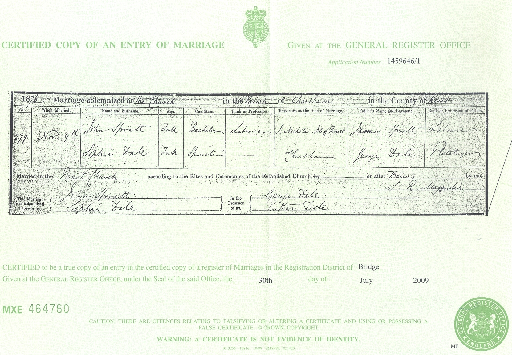
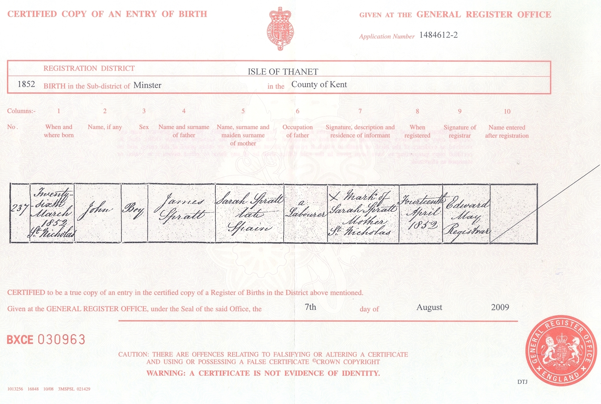
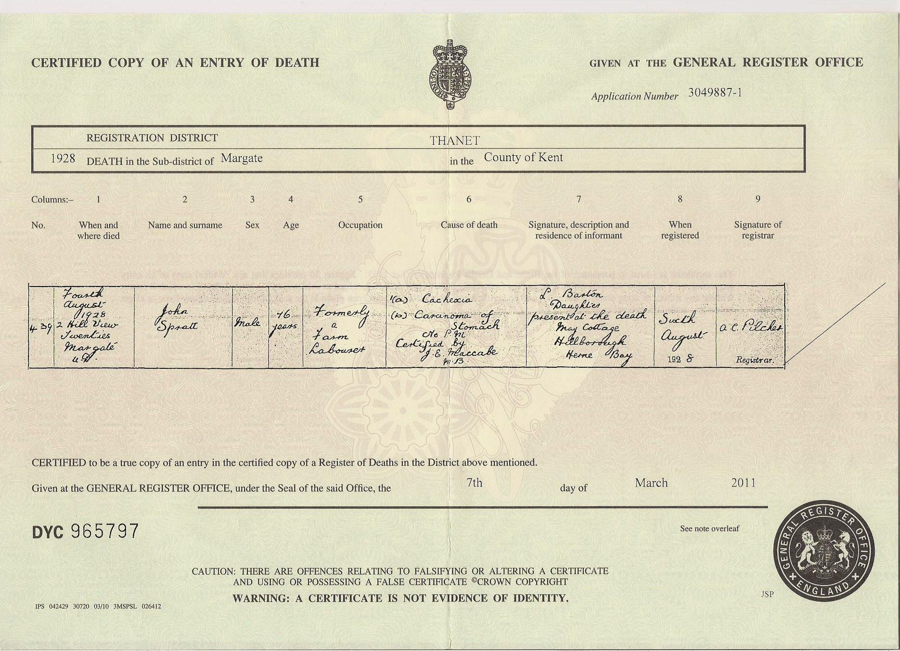
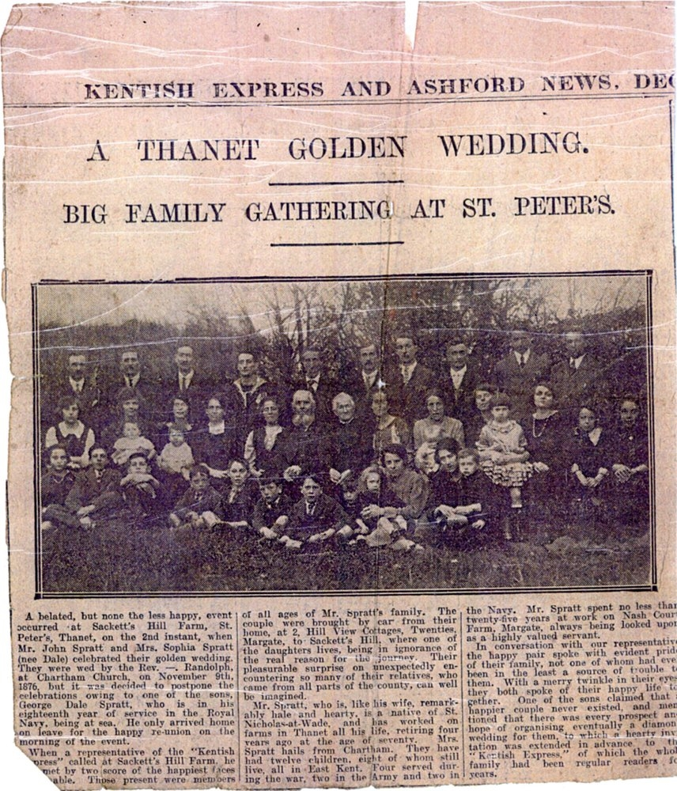
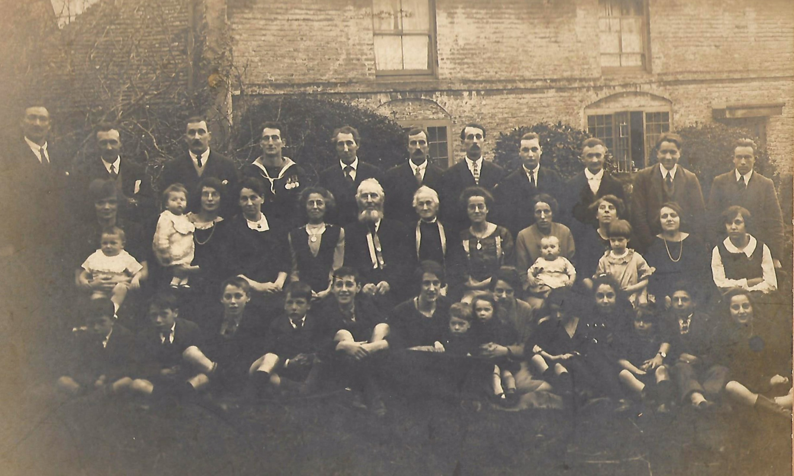

John Spratt 1852 - 1928
[ Home ] | [ Calendar ] | [ Surnames Index ] | [ Errors ] | [ Family History ]The child of James Spratt and Sarah Spain, John Spratt, the great-grandfather of Nigel Horne, was born in St Nicholas-at-Wade, Kent, England on 26 Mar 18521,2,3,4,5,6,7,8, was baptised there on 25 Apr 1852 and married Sophia Dale (with whom he had 12 children: Leonard, Amy, Ada, Ernest, Lillian, May, Harry Dale, George Dale, Ida, Hilda, Ella and Reuben) at St Mary's Church, Chartham, Kent, England on 9 Nov 187610 (Rev Randolph, St Marys). Like his father, he was an agricultural labourer.
During his life, he was living at The Row in St Nicholas-at-Wade on 7 Apr 186114; in Reculver, Kent, England in 18712; at The Street in St Nicholas-at-Wade on 3 Apr 188113; at Shuart Cottage, Podden Street in St Nicholas-at-Wade on 5 Apr 189115; at 2 Nash Court Cottage, Nash Road, Margate, Kent on 31 Mar 190111 - less than a mile from his niece May Spratt who was living at 2 Nash Court Cottage, Nash Road, Margate, Kent; at Nash Court Cottage, Nash Road, Margate, Kent on 2 Apr 191112; and at Nash, Thanet, Kent on 19 Jun 19217. In 1921 he was working at John Taylor Farmer.
He died on 4 Aug 1928 at 2 Hill View, Twenties, Shottendane Road, Margate, Kent9 (cachexia; Stomach Cancer).
Parents
- James was born on 12 May 1816
- Sarah was born c. 1814
Children
- Leonard was born on 9 Sept 1877
- Amy was born c. May 1879
- Ada was born c. May 1879
- Ernest was born on 19 Nov 1882
- Lillian was born on 23 Apr 1884
- May was born on 1 Jan 1888
- Harry Dale was born on 21 Jun 1890
- George Dale was born on 28 Jul 1891
- Ida was born on 7 Nov 1892
- Hilda was born on 7 Nov 1892
- Ella was born on 2 Feb 1895
- Reuben was born on 3 May 1896
Citations
- 1861 England Census Online publication - Provo, UT, USA: The Generations Network, Inc., 2005.Original data - Census Returns of England and Wales, 1861. Kew, Surrey, England: The National Archives of the UK (TNA): Public Record Office (PRO), 1861. Data imaged from the National
- 1871 England Census Online publication - Provo, UT, USA: The Generations Network, Inc., 2004.Original data - Census Returns of England and Wales, 1871. Kew, Surrey, England: The National Archives of the UK (TNA): Public Record Office (PRO), 1871. Data imaged from the National
- 1881 England Census Online publication - Provo, UT, USA: The Generations Network, Inc., 2004. 1881 British Isles Census Index provided by The Church of Jesus Christ of Latter-day Saints © Copyright 1999 Intellectual Reserve, Inc. All rights reserved. All use is subject to the
- 1891 England Census Online publication - Provo, UT, USA: The Generations Network, Inc., 2005.Original data - Census Returns of England and Wales, 1891. Kew, Surrey, England: The National Archives of the UK (TNA): Public Record Office (PRO), 1891. Data imaged from The National
- 1901 England Census Online publication - Provo, UT, USA: The Generations Network, Inc., 2005.Original data - Census Returns of England and Wales, 1901. Kew, Surrey, England: The National Archives of the UK (TNA): Public Record Office (PRO), 1901. Data imaged from the National
- 1911 England Census Online publication - Provo, UT, USA: Ancestry.com Operations, Inc., 2011.Original data - Census Returns of England and Wales, 1911. Kew, Surrey, England: The National Archives of the UK (TNA), 1911. Data imaged from the National Archives, London, England.
- 1921 Census Of England & Wales - Findmypast (was age 69 and the head of the household)
- England & Wales, FreeBMD Birth Index, 1837-1915 Online publication - Provo, UT, USA: The Generations Network, Inc., 2006.Original data - General Register Office. England and Wales Civil Registration Indexes. London, England: General Register Office. © Crown copyright. Published by permission of the Cont
- England & Wales, Death Index: 1984-2005 Online publication - Provo, UT, USA: The Generations Network, Inc., 2007.Original data - General Register Office. England and Wales Civil Registration Indexes. London, England: General Register Office. © Crown copyright. Published by permission of the Cont
- England & Wales, FreeBMD Marriage Index: 1837-1915 Online publication - Provo, UT, USA: The Generations Network, Inc., 2006.Original data - General Register Office. England and Wales Civil Registration Indexes. London, England: General Register Office. © Crown copyright. Published by permission of the Cont
- 1901 England, Wales & Scotland Census - Findmypast (was age 50 and the head of the household)
- 1911 Census for England & Wales - Findmypast (was age 59 and the head of the household)
- 1881 England, Wales & Scotland Census - Findmypast (was age 29 and the head of the household)
- 1861 England, Wales & Scotland Census - Findmypast (was age 9 and the son of the head of the household)
- 1891 England, Wales & Scotland Census - Findmypast (was age 38 and the head of the household)
Media
John Spratt - Sophia Dale - marriage cert

John Spratt - birth certificate

John Spratt - death certificate

John Spratt - Sophia Dale - golden wedding

John Spratt

Spratt Family Photograph

England & Wales births 1837-2006 - BMD/B/1852/2/IS/001572/009
England & Wales deaths 1837-2007 - BMD/D/1928/3/AZ/000741/114
England Marriages 1538-1973 - R_848405105
Canterbury Marriages - GBPRS/CANT/M/97244494/1
England & Wales marriages 1837-2008 - BMD/M/1876/4/AZ/000307/214
England & Wales births 1837-2006 - BMD/B/1852/1/IS/001583/027
1881 England, Wales & Scotland Census - GBC/1881/0004821587
1861 England, Wales & Scotland Census - GBC/1861/0003520651
1891 England, Wales & Scotland Census - GBC/1891/0005855063
England Births & Baptisms 1538-1975 - R_884661441
Kent Baptisms - GBPRS/CANT/B/96801572
Kent marriages and banns - GBPRS/CANT/M/94047890/1
Family Tree

Map
Generated by ged2site. Last updated on Jul 3, 2024
Known Issues
Missing house number (2) in 1911 that was known in 1901
Jun 19, 1921: not living at same address as spouse Sophia Dale ('Nash, Thanet, Kent, England'/'Nash Court Farm Cottage, Margate, Kent, England')
Location for "employment" on 1921 is empty